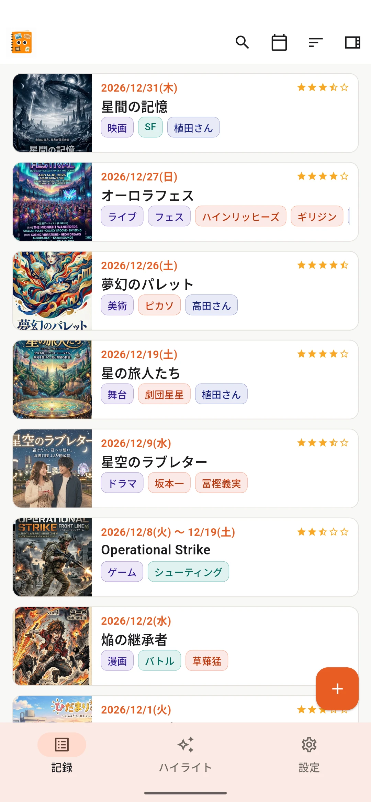
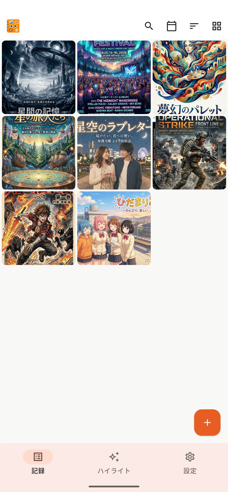
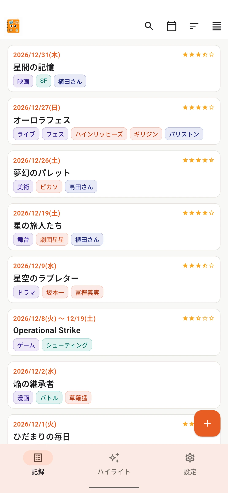
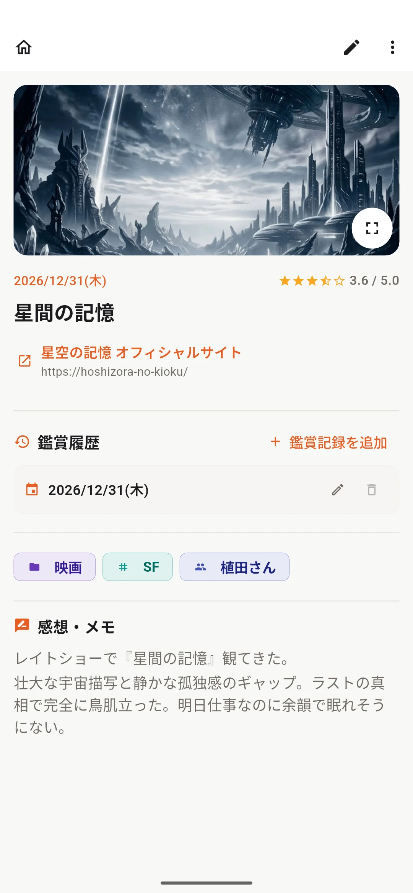
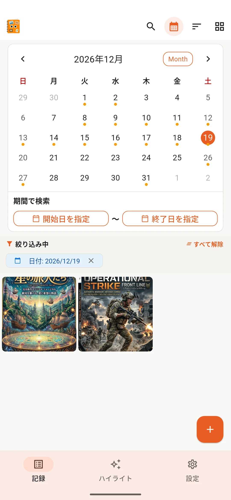
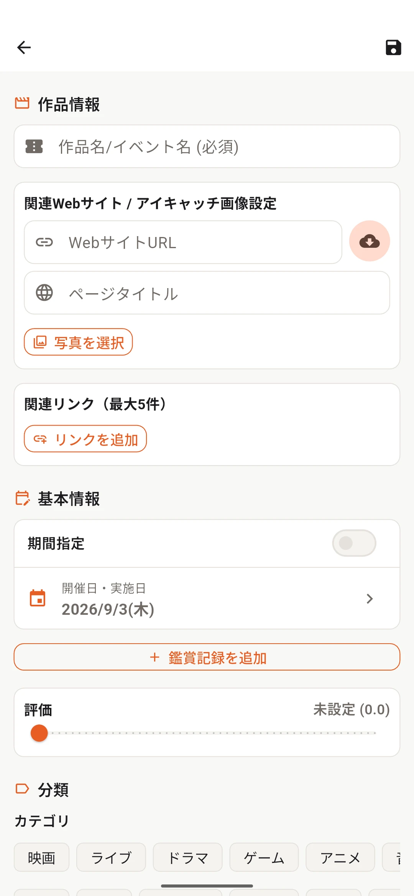

無料版
20件まで記録可能
- 機能はPremiumと同等
Mita-Mon
映画、漫画、本、ライブ、舞台、ゲーム、アート など、
いろいろなジャンルの思い出をまとめて記録・管理アプリです。
LOOK BACK
「最近なに観たっけ？」「去年どんなライブに行った？」「好きな作品って何だっけ？」 ミタモンは、いろいろなジャンルの思い出をまとめて記録して、 あとから眺めて、探して、振り返るためのアプリです。
ALL IN ONE
記録した作品や体験は、ひとつの一覧で見返せます。 画像を中心に眺めたり、コンパクトに並べたり、見たい形に切り替えながら振り返れます。




気になる記録を開けば、当時の評価や感想、画像などを確認できます。 日付から思い出したいときは、カレンダーから過去の記録をたどれます。


HIGHLIGHTS
ハイライトでは、記録件数や高評価作品だけでなく、よく観たカテゴリ、タグ、 アーティスト、同行者、何度も観た作品などをまとめて確認できます。 「自分はこんなものを楽しんできたんだ」と振り返れる画面です。

EASY TO RECORD
毎回たくさん入力する必要はありません。
あとで振り返るために必要な情報だけ、自分のペースで残せます。

PRIVACY & YOUR DATA
ミタモンの記録データは、原則として端末内に保存します。 アカウント登録は不要で、提供者のサーバーへ鑑賞記録や感想を保存する仕組みもありません。
必要に応じて、記録と画像をバックアップファイルとして書き出し、自分で保管することもできます。
Mita-Mon
映画も本もライブも。ジャンルを越えて、あなたが楽しんできたものを振り返ってみませんか。